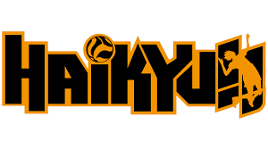

A filosofia do Karasuno é a da evolução constante e da agressividade total...
O time é focado na ofensiva e no ataque rápido...

A filosofia do Nekoma é a resiliência e a conexão perfeita...
O time se destaca pela defesa impecável...

A filosofia do Seijoh se baseia no equilíbrio...
Time comandado por Oikawa...

Famosos pelo bloqueio de leitura...

Filosofia baseada na força bruta...

Filosofia baseada no suporte mútuo...

Foco no presente e evolução constante...

Precisão e controle absoluto de riscos...